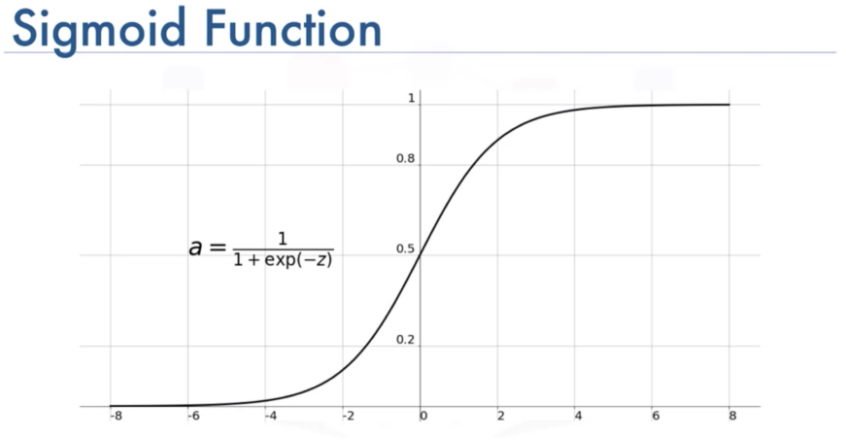

Comparison: Machine Learning Models
Click any Image to get an in-depth analysis
Random Forest

Logistic Regression
Support Vector Machine

K Nearest Neighbors

Binary Classification--Success or Fail
Random Forest, Logistic Regression, Support Vector Machine (SVM),
and K Nearest Neighbor (KNN) models were used to classify the movie data
as successful or failed movies.
Random Forest had the highest testing data
score of 0.896, so for this dataset, we would recommend using this
machine learning model.
However, KNN had the lowest score of 0.840,
so given the small range of difference between all four models,
any of these options would be acceptable to use.
Multi-label Classification--Rating Integer of 2-9
KNN and a Neural Network were used to classify the movies into specific rating
integers ranging from 2 to 9. These models were much less successful and only
predicted the correct score about half of the time.
The most successful model was the Neural Network with one hidden layer
which had a score of 0.546. The least successful model was KNN which only
had a score of 0.456.